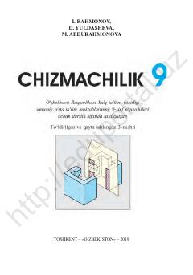

C99-sinf o'quvchilari uchun chizmachilik fanidan o'quv qo'llanma va darslik.
Ushbu darslik umumiy o'rta ta'lim maktablarining 9-sinf o'quvchilari uchun mo'ljallangan bo'lib, chizmachilik fanidan nazariy va amaliy bilimlarni o'z ichiga oladi. Kitobda detallarning tasvirlari, kesimlar, grafik ishlar va kompyuterda chizmachilik asoslari batafsil yoritilgan.